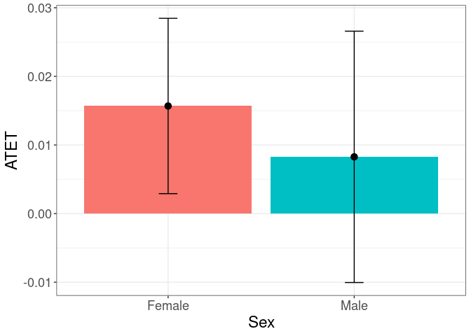
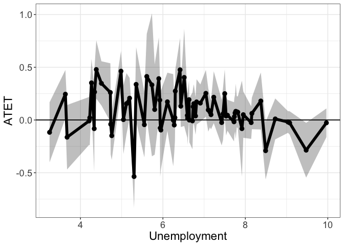

The didnp package contains tools for computing average treatment effect parameters in a Difference-in-Differences setup without specifying a model.
Installation
You can install didnp from CRAN with:
install.packages("didnp", dependencies = TRUE)or get the latest version from github with:
if ( !require("devtools") ) install.packages("devtools"); library(devtools)
devtools::install_github("OlegBadunenko/didnp")Illustration
The following is a simplified example …, which comes from that.
Data set is shared by Kuka et al, 2020. Here we showcase the functionality of the package by using a subset, which is available in the package and can be loaded by
library(didnp)
library(ggplot2)
data(DACAsub, package = "didnp")
head(DACAsub)
#R> inschool hs scol post elig fem race var.bpl state year age yrimmig ageimmig
#R> 1 0 1 1 1 0 1 3 4 1 2015 27 1988 0
#R> 2 0 1 1 0 0 1 1 0 1 2007 29 1978 0
#R> 3 1 0 0 1 0 1 4 4 1 2013 16 2000 3
#R> 4 0 0 0 1 1 0 3 3 1 2012 23 1990 1
#R> 5 0 1 1 1 0 1 3 3 1 2014 26 1987 -1
#R> 6 0 1 0 0 0 1 2 3 1 2006 21 1986 1
#R> a1418 a1922 a2330 htus perwt treatment_period
#R> 1 NA NA 1 NA 32 1
#R> 2 NA NA 1 NA 39 0
#R> 3 1 NA NA NA 119 1
#R> 4 NA NA 1 NA 11 1
#R> 5 NA NA 1 NA 111 1
#R> 6 NA 1 NA NA 320 0The description of the dataset can be found by typing
?DACAsubAlthough this can be done on the fly, the subsample can be prepared beforehand:
# get the subsample
DACAsub$mysmpl <- mysmpl <-
DACAsub$a1922==1 & !is.na(DACAsub$a1922) &
DACAsub$htus==1 & !is.na(DACAsub$htus)
# generate 'treatment_period'
DACAsub$treatment_period <- ifelse( DACAsub[,"year"] > 2011, 1, 0)Estimation
To estimate the average treatment effects, we use the didnpreg function. Define the formula that we will use:
form1 <- inschool ~ fem + race + var.bpl + state + age + yrimmig +
ageimmig | inschool | year | elig | treatment_period | perwtThe didnpreg function allows using matrices. The manual explains how to use matrix syntax (type ?didnpreg). To obtain standard errors,
we will use a few number of bootstrap replicaitons here, but we advise to set
boot.num = 399or larger.
To speed up the estimation
on computers with multiple cores, use multiplrocessing by setting option
cores.
Suppress output by setting print.level = 0. The default value is 1.
# suppress output
tym1a <- didnpreg(
form1,
data = DACAsub,
subset = mysmpl,
bwmethod = "opt",
boot.num = 99,
TTb = FALSE,
print.level = 0,
cores = 8)
#R> Bandwidths are chosen via the plug-in methoddidnpreg returns a class didnp object. This object contains estimates of the average treatment effects and their standard errors. To see these, we can call the summary function.
# Print the summary of estimation
summary(tym1a)
#R> Number of Observations is 34768
#R> Number of Unordered Categorical Regressors is 4
#R> Number of Ordered Categorical Regressors is 3
#R>
#R> Bandwidths are chosen via the plug-in method
#R>
#R> Regressor Type Bandwidth
#R> 1 fem factor 9.569206e-04
#R> 2 race factor 5.831931e-05
#R> 3 var.bpl factor 8.701817e-05
#R> 4 state factor 1.772228e-05
#R> 5 age ordered 4.731888e-05
#R> 6 yrimmig ordered 2.763923e-05
#R> 7 ageimmig ordered 8.690101e-05
#R>
#R> Bootstrapping standard errors (99 replications) completed in 15 seconds
#R>
#R> Unconditional Treatment Effect on the Treated (ATET):
#R>
#R> TTa = 0.03684
#R> TTa sd = 0.6673
#R> N(TTa) = 2337Estimating TTb will take longer. The bandwidths is cross-validated.
# Show output as the estimation goes
tym1b <- didnpreg(
form1,
data = DACAsub,
subset = mysmpl,
bwmethod = "CV",
boot.num = 99,
TTb = TRUE,
print.level = 1,
cores = 8)
#R> Number of Observations is 34768
#R> Number of Unordered Categorical Regressors is 4
#R> Number of Ordered Categorical Regressors is 3
#R>
#R> Calculating cross-validated bandwidths
#R> Kernel Type for Unordered Categorical Regressors is Aitchison and Aitken
#R> Kernel Type for Ordered Categorical is Li and Racine
#R> Calculating cross-validated bandwidths completed in 21 second
#R>
#R> Regressor Type Bandwidth
#R> 1 fem factor 0.0008408093
#R> 2 race factor 0.0001004406
#R> 3 var.bpl factor 0.0001518288
#R> 4 state factor 0.0009238220
#R> 5 age ordered 0.0001532112
#R> 6 yrimmig ordered 0.0001297687
#R> 7 ageimmig ordered 0.0001553703
#R>
#R> Calculating ATET: TTa and TTb (may take some time)
#R> TTa = 0.04365, N(TTa) = 2337
#R> TTb = 0.05493, N(TTb) = 24018
#R>
#R> Bootstrapping standard errors (99 replications)
#R> Bootstrapping standard errors completed in 2 minutes and 45 seconds
#R>
#R> TTa sd = 0.6344
#R> TTb sd = 0.5254Plotting Heterogenous Treatment Effects
To plot the heterogenous treatment effects, use the didnpplothte command. Define three variables by and over which the treatment effects will be plotted:
DACAsub[tym1b$esample, "race"] -> race
DACAsub[tym1b$esample, "fem"] -> sex
as.numeric(DACAsub[tym1b$esample, "age"]) -> ageHere age is quasi-continuous. It will have only 4 values (in fact fewer than the Race variable), but we use it to showcase the functionality.
First, use one categorical by variable:
tym1b_gr_race <- didnpplothte(
obj = tym1b,
level = 95,
by = race[tym1b$sample1],
xlab = "Race",
ylab = "ATET",
by.labels.values = data.frame(
old = c(1,2,3,4,5),
new = c("Hispanic", "White", "Black", "Asian", "Other")
))
tym1b_gr_race$data.a
#R> atet atet.sd by by2
#R> 1 0.03973812 0.02329393 1 Asian
#R> 2 0.24731001 0.02776878 2 Black
#R> 3 0.07469281 0.02504381 3 Hispanic
#R> 4 0.70227835 0.12504263 4 Other
#R> 5 -0.05053639 0.04701475 5 White
tym1b_gr_race$data.b
#R> atet atet.sd by by2
#R> 1 0.05464285 0.02308424 1 Asian
#R> 2 0.22616739 0.01240306 2 Black
#R> 3 -0.05820048 0.02823952 3 Hispanic
#R> 4 0.17977025 0.05264366 4 Other
#R> 5 -0.04620788 0.02864418 5 White
tym1b_gr_race$plot.a
tym1b_gr_race$plot.b
Here objects data.a and data.b contain data that is used to produce plot.a and plot.b. The graphs are ggplot objects and can be amended further.
Another example is the graph with treatment effects by sex. Note the sample object tym1b is used:
tym1b_gr_sex <- didnpplothte(
obj = tym1b,
level = 95,
by = sex[tym1b$sample1],
xlab = "Sex",
ylab = "ATET",
by.labels.values = data.frame(c(1,0), c("Female", "Male"))
)
tym1b_gr_sex$data.a
#R> atet atet.sd by by2
#R> 1 0.03239246 0.02861926 0 Female
#R> 2 0.05649511 0.03096917 1 Male
tym1b_gr_sex$data.b
#R> atet atet.sd by by2
#R> 1 0.07637724 0.03017518 0 Female
#R> 2 0.03069940 0.03109617 1 Male
tym1b_gr_sex$plot.a
tym1b_gr_sex$plot.b
The didnpplothte command will recognize if by is continuous variable, split it into given number of intervals n.intervals and plot the treatment effects by the split variable.
tym1b_gr_age <- didnpplothte(
obj = tym1b,
level = 95,
by = age[tym1b$sample1],
n.intervals = 10,
xlab = "Age"
)
tym1b_gr_age$data.a
#R> atet atet.sd by
#R> 1 0.02258246 0.04143805 (6,6.3]
#R> 4 0.13175762 0.04606008 (6.9,7.2]
#R> 7 -0.04004534 0.03782480 (7.8,8.1]
#R> 10 0.05919285 0.03762810 (8.7,9]
tym1b_gr_age$data.b
#R> atet atet.sd by
#R> 1 0.023020901 0.02621411 (6,6.3]
#R> 4 0.072791567 0.02778018 (6.9,7.2]
#R> 7 0.005024515 0.03053302 (7.8,8.1]
#R> 10 0.126771550 0.03814443 (8.7,9]
tym1b_gr_age$plot.a
tym1b_gr_age$plot.b
Ameding ggplot object is easy. For example adding a 0 horizontal line is
tym1b_gr_age$plot.a +
geom_hline(yintercept = 0)
Anternatively, one can use the
data.aanddata.bobjects to plot from scratch.
The treatment effects can be visualized by and over. Variable by can be both categorical and continuous, while over must be categorical. For example, to plot treatment effects by age over race, specify the over option:
tym1b_gr_age_race <- didnpplothte(
obj = tym1b,
level = 90,
by = age[tym1b$sample1],
n.intervals = 7,
over = race[tym1b$sample1],
xlab = "Age",
ylab = "ATET",
point_size = 2,
over.labels.values = data.frame(
old = c(1,2,3,4,5),
new = c("Hispanic", "White", "Black", "Asian", "Other")
),
text_size = 15)
tym1b_gr_age_race$data.a
#R> atet atet.sd by over
#R> 2 0.15165527 0.01062371 (6,6.43] Black
#R> 3 0.01626993 0.04320838 (6,6.43] Hispanic
#R> 4 0.10710845 0.06415061 (6,6.43] Other
#R> 5 0.15114738 0.04724728 (6,6.43] White
#R> 12 -0.34630912 0.08719329 (6.86,7.29] Black
#R> 13 0.14358612 0.04715322 (6.86,7.29] Hispanic
#R> 14 -0.19282858 0.10943276 (6.86,7.29] Other
#R> 15 -0.16363451 0.05504180 (6.86,7.29] White
#R> 21 0.70227835 0.12504263 (7.71,8.14] Asian
#R> 22 0.26682557 0.03108044 (7.71,8.14] Black
#R> 23 -0.04913575 0.03900297 (7.71,8.14] Hispanic
#R> 24 -0.73904259 0.03624854 (7.71,8.14] Other
#R> 25 0.34994316 0.02067305 (7.71,8.14] White
#R> 32 0.30958898 0.03716571 (8.57,9] Black
#R> 33 0.04583527 0.03863109 (8.57,9] Hispanic
#R> 34 0.52289920 0.21845263 (8.57,9] Other
#R> 35 0.55774313 0.06758809 (8.57,9] White
tym1b_gr_age_race$plot.a
tym1b_gr_age_race$data.b
#R> atet atet.sd by over
#R> 1 -0.015983909 0.02371254 (6,6.43] Asian
#R> 2 -0.074483104 0.01936453 (6,6.43] Black
#R> 3 0.025132472 0.02687571 (6,6.43] Hispanic
#R> 4 0.085608034 0.02099113 (6,6.43] Other
#R> 5 -0.048900725 0.01891856 (6,6.43] White
#R> 11 -0.025533206 0.09713600 (6.86,7.29] Asian
#R> 12 -0.327284870 0.03461843 (6.86,7.29] Black
#R> 13 0.077691231 0.02855844 (6.86,7.29] Hispanic
#R> 14 0.032315749 0.06025738 (6.86,7.29] Other
#R> 15 0.200345142 0.01642683 (6.86,7.29] White
#R> 21 0.194504189 0.08766893 (7.71,8.14] Asian
#R> 22 0.038704125 0.05220861 (7.71,8.14] Black
#R> 23 0.000519385 0.03140487 (7.71,8.14] Hispanic
#R> 24 -0.245888017 0.05514657 (7.71,8.14] Other
#R> 25 0.372330533 0.01883086 (7.71,8.14] White
#R> 31 0.407580751 0.12459889 (8.57,9] Asian
#R> 32 0.222648494 0.05453234 (8.57,9] Black
#R> 33 0.121894974 0.03921493 (8.57,9] Hispanic
#R> 34 -0.145514962 0.04502563 (8.57,9] Other
#R> 35 0.454140065 0.02488101 (8.57,9] White
tym1b_gr_age_race$plot.b
Note that the graph shows the 90% confidence interval.
Alternatively use the data from the object
tym1b_gr_age_race
to produce another type of graph:
crit.value <- 2
pd <- position_dodge(0.1) # move them .05 to the left and right
d1 <- tym1b_gr_age_race$data.b
d1$Race <- d1$over
ggplot(d1, aes(x = by, y = atet, color = Race, group = Race)) +
geom_errorbar(aes(ymin = atet - crit.value*atet.sd, ymax = atet + crit.value*atet.sd), color = "black", width = .1, position = pd) +
geom_line(position = pd) +
geom_point(position = pd, size = 3, shape = 21, fill = "white") +
xlab("Age") +
ylab("ATET") +
theme_bw() +
theme(legend.position = "right", text = element_text(size = 17))
The next plot shows treatment effects by age over sex:
tym1b_gr_age_sex <- didnpplothte(
obj = tym1b,
level = 90,
by = age[tym1b$sample1],
n.intervals = 7,
over = sex[tym1b$sample1],
xlab = "Age",
ylab = "ATET",
over.lab = "Sex",
point_size = 2,
over.labels.values = data.frame(c(1,0), c("Female", "Male")),
text_size = 15)
tym1b_gr_age_sex$data.a
#R> atet atet.sd by over
#R> 1 0.0591634709 0.05941102 (6,6.43] Female
#R> 2 -0.0102217556 0.05286890 (6,6.43] Male
#R> 5 0.1438796053 0.05857366 (6.86,7.29] Female
#R> 6 0.1215858569 0.06130402 (6.86,7.29] Male
#R> 9 0.0009383166 0.04956547 (7.71,8.14] Female
#R> 10 -0.0759060343 0.05692566 (7.71,8.14] Male
#R> 13 0.0197413288 0.04809669 (8.57,9] Female
#R> 14 0.0946049730 0.04833392 (8.57,9] Male
tym1b_gr_age_sex$plot.a
tym1b_gr_age_sex$data.b
#R> atet atet.sd by over
#R> 1 0.003383205 0.03427280 (6,6.43] Female
#R> 2 0.040235436 0.03545742 (6,6.43] Male
#R> 5 0.053757977 0.03442821 (6.86,7.29] Female
#R> 6 0.089472946 0.03783216 (6.86,7.29] Male
#R> 9 -0.030444727 0.04287245 (7.71,8.14] Female
#R> 10 0.037241629 0.03916480 (7.71,8.14] Male
#R> 13 0.104039743 0.05770329 (8.57,9] Female
#R> 14 0.146769182 0.04926300 (8.57,9] Male
tym1b_gr_age_sex$plot.b
Finally, both by and over are both categorical:
tym1b_gr_sex_race <- didnpplothte(
obj = tym1b,
level = 95,
by = sex[tym1b$sample1],
over = race[tym1b$sample1],
xlab = "Sex",
ylab = "ATET",
over.lab = "Race",
point_size = 3,
by.labels.values = data.frame(c(1,0), c("Female", "Male")),
over.labels.values = data.frame(
old = c(1,2,3,4,5),
new = c("Hispanic", "White", "Black", "Asian", "Other")
),
text_size = 17)
tym1b_gr_sex_race$data.a
#R> atet atet.sd by over
#R> 2 -0.10858267 0.02305363 Female Black
#R> 3 0.05563993 0.03193745 Female Hispanic
#R> 4 0.13455875 0.08585094 Female Other
#R> 5 0.19570925 0.02591887 Female White
#R> 6 0.70227835 0.12504263 Male Asian
#R> 7 0.20560387 0.03922976 Male Black
#R> 8 0.02583396 0.02936440 Male Hispanic
#R> 9 -0.17393314 0.05543052 Male Other
#R> 10 0.32839692 0.05821247 Male White
tym1b_gr_sex_race$plot.a
tym1b_gr_sex_race$data.b
#R> atet atet.sd by over
#R> 1 0.08165344 0.10293279 Female Asian
#R> 2 -0.03239341 0.04201694 Female Black
#R> 3 0.02982270 0.03196178 Female Hispanic
#R> 4 -0.13458069 0.03546735 Female Other
#R> 5 0.22459774 0.01549519 Female White
#R> 6 0.23864034 0.06072008 Male Asian
#R> 7 -0.08312274 0.03816828 Male Black
#R> 8 0.07652925 0.03089471 Male Hispanic
#R> 9 0.05823271 0.03602511 Male Other
#R> 10 0.22764362 0.01690772 Male White
tym1b_gr_sex_race$plot.b